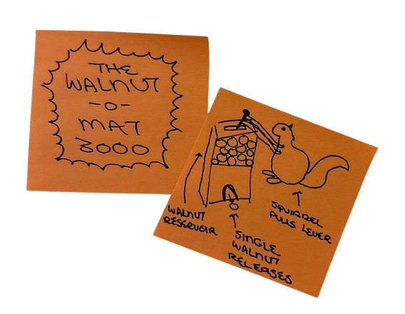
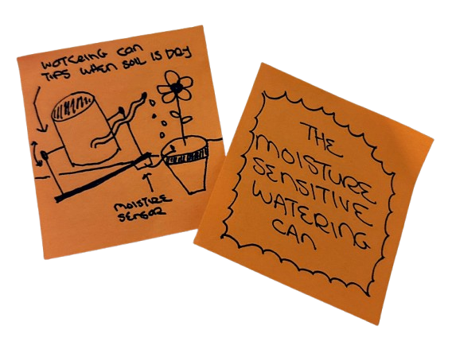
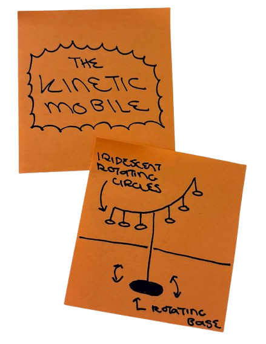

<div class="textcontainer">
<br></br>
<h1>Part I: Final Project Proposals</h1>
<p class = "margin"></p>
I am currently considering the following three ideas for my final project:
<p class = "margin"></p>

<h3 class="highlight">IDEA 1: The Walnut-O-Mat 3000</h3 class="highlight">
<p>I have a love-hate relationship with squirrels and other rodents: while I find them extremely cute, they wreak havoc in my garden, and I've spent countless hours trying to keep them away from my produce. (<a href="youtube.com/watch?v=hFZFjoX2cGg&amp;vl=en">Mark Rober&rsquo;s videos</a> perfectly capture this struggle.)</p>
<p>My idea is to strike a truce with the squirrels by building a vending machine that dispenses exactly one walnut when a lever is pulled. A timer will ensure the lever can&rsquo;t be pulled more than once every 10 minutes.</p>
<p>⸻</p>

<h3 class="highlight">IDEA 2: The Moisture-Sensitive Watering Can</h3>
<p>This idea draws inspiration from two experiences:</p>
<ul>
<li>My final project for Stanford's Design and Manufacturing class, where I designed a brass watering can with an undulating spout. I machined the parts but never got to brazing and finishing, as we were sent home early this quarter due to the pandemic :(</li>
<li>My garden this past summer, in which moisture-sensitive drip irrigation would have been extremely useful to keep my plants alive while I was away.</li>
</ul>
<p>The concept is to build a moisture-sensitive watering can for a single house plant. I would 3D print or CNC a design inspired by my original undulating spout and connect it to a soil moisture sensor. The can would tip and water the plant only when the soil is dry.</p>
<p>⸻</p>

<h3 class="highlight">IDEA 3: The Kinetic Mobile</h3>
<p>This project is inspired by the installation <em>As Long as the Sun Lasts</em> at one of my favorite museums, the Louisiana in Denmark. The piece would feature a graceful cascade of circles attached to a central stem, rotating at a consistent speed.</p>
<p>There's also potential to incorporate light (to create shifting colors) and sound, transforming it into a beautiful, immersive artistic experience. Unlike the other ideas, this one would be purely artistic rather than functional.</p>
<h1>Part II: Website Setup</h1>
</div>